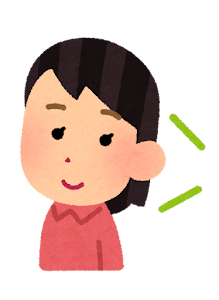
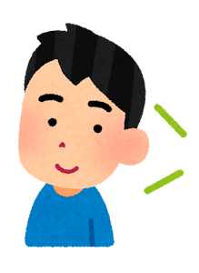
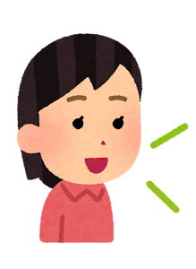
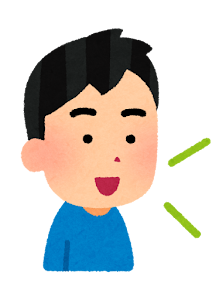
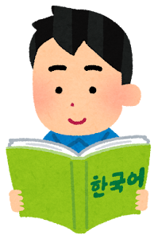

Unit 1 问候 & 国籍
语法
| 语法点 | 用法详解 | 例句 |
|---|---|---|
| 은/는 | 主语助词，表示主语或话题。有收音(받침)用 -은，无收音用 -는。 |
|
| 입니다 | 表示「是…」，正式陈述形。名词后直接加。所有名词通用。 |
|
| 입니까? | 表示「是…吗？」，正式疑问形。名词后直接加，句尾语调上升。 |
|
| 이/가 아닙니다 | 表示「不是…」。有收音用 -이 아닙니다，无收音用 -가 아닙니다。 |
|
| 에서 | 表示「从…来」。与移动动词(오다/가다)搭配使用。 |
|
词汇
저
[jeo]
我(谦称)
학생
[haksaeng]
学生
선생님
[seonsaengnim]
老师
한국
[hanguk]
韩国
중국
[jungguk]
中国
일본
[ilbon]
日本
미국
[miguk]
美国
사람
[saram]
人
이름
[ireum]
名字
처음
[cheoeum]
初次
반갑다
[bangapda]
高兴
학교
[hakgyo]
学校
교과서
[gyogwaseo]
教科书
사전
[sajeon]
词典
네
[ne]
是的
아니요
[aniyo]
不是
自测

Unit 2 职业 & 物品
语法
| 语法点 | 用法详解 | 例句 |
|---|---|---|
| 이/가 | 主语格助词，强调主语或新信息。有收音用 -이，无收音用 -가。 |
|
| 이/그/저 | 指示词。이=近指(这个)，그=中指(那个)，저=远指(那个)。 |
|
| 은/는...이/가 아닙니다 | 表示「A不是B」。은/는标记主题，이/가 아닙니다否定。 |
|
| 도 | 表示「也」。替代 은/는 或 이/가，附加于名词后。 |
|
词汇
의사
[uisa]
医生
변호사
[byeonhosa]
律师
회사원
[hoesawon]
公司职员
가수
[gasu]
歌手
요리사
[yorisa]
厨师
기자
[gija]
记者
책
[chaek]
书
공책
[gongchaek]
笔记本
가방
[gabang]
包
볼펜
[bolpen]
圆珠笔
연필
[yeonpil]
铅笔
지우개
[jiugae]
橡皮
의자
[uija]
椅子
책상
[chaeksang]
书桌
시계
[sigye]
钟表
이것
[igeot]
这个
그것
[geugeot]
那个
저것
[jeogeot]
那个(远)
무엇
[mueot]
什么
누구
[nugu]
谁
自测

Unit 3 家人 & 数词 & 场所
语法
| 语法点 | 用法详解 | 例句 |
|---|---|---|
| 固有数词 | 하나,둘,셋,넷,다섯,여섯,일곱,여덟,아홉,열。用于年龄、人数、时刻(小时)。 |
|
| 에(地点) | 地点助词，表示「在…」。与存在动词 있다/없다 或移动动词搭配。 |
|
| 이/가 있다/없다 | 表示「有/没有…」。있다=有/在，없다=没有/不在。 |
|
| 의 | 所属格助词，表示「…的」。口语中常读作 [에]。 |
|
| 位置名词 | 앞(前), 뒤(后), 옆(旁), 위(上), 아래(下)。与 -에 搭配使用。 |
|
词汇
가족
[gajok]
家人
할아버지
[harabeoji]
爷爷
할머니
[halmeoni]
奶奶
아버지
[abeoji]
父亲
어머니
[eomeoni]
母亲
오빠
[oppa]
哥哥(女用)
형
[hyeong]
哥哥(男用)
언니
[eonni]
姐姐(女用)
누나
[nuna]
姐姐(男用)
남동생
[namdongsaeng]
弟弟
여동생
[yeodongsaeng]
妹妹
하나
[hana]
一
둘
[dul]
二
셋
[set]
三
앞
[ap]
前面
뒤
[dwi]
后面
옆
[yeop]
旁边
위
[wi]
上面
아래
[arae]
下面
은행
[eunhaeng]
银行
병원
[byeongwon]
医院
약국
[yakguk]
药店
식당
[sikdang]
餐厅
도서관
[doseogwan]
图书馆
自测

Unit 4 动作 & 教室物品
语法
| 语法点 | 用法详解 | 例句 |
|---|---|---|
| ㅂ/습니다(动词) | 动词正式陈述形。有收音用 -습니다，无收音用 -ㅂ니다。 |
|
| ㅂ/습니까?(动词) | 动词正式疑问形。有收音用 -습니까，无收音用 -ㅂ니까。 |
|
| 고 | 连接两个动作，表示「…然后…」。动词词干后直接加。时态由最后动词决定。 |
|
| 을/를 | 宾语助词，表示动作对象。有收音用 -을，无收音用 -를。 |
|
| ㅂ/습니다(形容词) | 形容词正式陈述形。有收音用 -습니다，无收音用 -ㅂ니다。 |
|
词汇
가다
[gada]
去
오다
[oda]
来
먹다
[meokda]
吃
마시다
[masida]
喝
읽다
[ikda]
读
보다
[boda]
看
만나다
[mannada]
见面
공부하다
[gongbuhada]
学习
자다
[jada]
睡觉
운동하다
[undonghada]
运动
듣다
[deutda]
听
말하다
[malhada]
说
쓰다
[sseuda]
写/用
배우다
[baeuda]
学习
가르치다
[gareuchida]
教
좋다
[jota]
好
나쁘다
[nappeuda]
坏
크다
[keuda]
大
작다
[jakda]
小
많다
[manta]
多
재미있다
[jaemiitda]
有趣
재미없다
[jaemieopda]
无聊
自测
Unit 5 食物 & 形容词
语法
| 语法点 | 用法详解 | 例句 |
|---|---|---|
| ㄴ/은(形容词定语) | 形容词修饰名词。有收音用 -은，无收音用 -ㄴ。 |
|
| 아/어/여요 | 非正式礼貌体。元音ㅏ/ㅗ→아요，其他→어요，하다→여요(해요)。 |
|
| 하고 | 表示「和…一起」。名词后直接加，口语性强。 |
|
| 안 | 短型否定，表示「不…」。放在动词/形容词前面。 |
|
词汇
음식
[eumsik]
食物
밥
[bap]
饭
빵
[ppang]
面包
고기
[gogi]
肉
생선
[saengseon]
鱼
야채
[yachae]
蔬菜
과일
[gwail]
水果
김치
[gimchi]
泡菜
불고기
[bulgogi]
烤肉
비빔밥
[bibimbap]
拌饭
냉면
[naengmyeon]
冷面
떡볶이
[tteokbokki]
炒年糕
김밥
[gimbap]
紫菜包饭
라면
[ramyeon]
拉面
물
[mul]
水
우유
[uyu]
牛奶
커피
[keopi]
咖啡
맛있다
[masitda]
好吃
맛없다
[maseopda]
难吃
달다
[dalda]
甜
맵다
[maepda]
辣
뜨겁다
[tteugeopda]
热
차갑다
[chagapda]
凉
예쁘다
[yeppeuda]
漂亮
自测


Unit 6 家人称呼 & 敬语
语法
| 语法点 | 用法详解 | 例句 |
|---|---|---|
| (으)시 | 敬语后缀，表尊敬。有收音用 -으시，无收音用 -시。用于动词/形容词词干。 |
|
| 았/었/였 | 过去时。ㅏ/ㅗ→았，其他→었，하다→였。 |
|
| 지 않다 | 长型否定。动词词干后加 -지 않다，比 안 更正式。 |
|
| 께서 | 敬语主语助词，替代 은/는/이/가，必须与敬语谓词搭配。 |
|
词汇
할아버지
[harabeoji]
爷爷
할머니
[halmeoni]
奶奶
아버님
[abeonim]
父亲(敬)
어머님
[eomeonim]
母亲(敬)
형님
[hyeongnim]
哥哥(敬)
누님
[nunim]
姐姐(敬)
아드님
[adeunim]
令郎
따님
[ttanim]
令爱
말씀
[malsseum]
话(敬)
진지
[jinji]
饭(敬)
댁
[daek]
府上(敬)
성함
[seongham]
姓名(敬)
연세
[yeonse]
年龄(敬)
생신
[saengsin]
生日(敬)
주무시다
[jumusida]
睡(敬)
계시다
[gyesida]
在(敬)
드시다
[deusida]
吃(敬)
편찮으시다
[pyeonchaneusida]
不舒服(敬)
돌아가시다
[doragasida]
去世(敬)
어제
[eoje]
昨天
오늘
[oneul]
今天
내일
[naeil]
明天
지난주
[jinanju]
上周
작년
[jangnyeon]
去年
自测
Unit 7 购物 & 食物 & 颜色
语法
| 语法点 | 用法详解 | 例句 |
|---|---|---|
| 이/가 Adj | 形容词作谓语。主语用 이/가 标记。 |
|
| (으)ㄹ까요? | 建议或询问意见，「…吧？」。有收音用 -을까요，无收音用 -ㄹ까요。 |
|
| 고 싶다 | 表示「想做…」。动词词干后加 -고 싶다。 |
|
| 보다 | 比较，「比…更…」。放在比较对象后面。 |
|
词汇
백화점
[baekhwajeom]
百货商店
시장
[sijang]
市场
가게
[gage]
店铺
편의점
[pyeonuijeom]
便利店
값
[gap]
价格
돈
[don]
钱
비싸다
[bissada]
贵
싸다
[ssada]
便宜
사다
[sada]
买
팔다
[palda]
卖
주다
[juda]
给
받다
[batda]
收
빨간색
[ppalgansaek]
红色
파란색
[paransaek]
蓝色
노란색
[noransaek]
黄色
초록색
[choroksaek]
绿色
검은색
[geomeunsaek]
黑色
하얀색
[hayansaek]
白色
분홍색
[bunhongsaek]
粉色
보라색
[borasaek]
紫色
주황색
[juhwangsaek]
橙色
회색
[hoesaek]
灰色
갈색
[galsaek]
棕色
自测
Unit 8 交通 & 电话 & 方向
语法
| 语法点 | 用法详解 | 例句 |
|---|---|---|
| (으)로 | 表示方向或工具、方式。有收音(ㄹ除外)用 -으로，无收音或ㄹ收音用 -로。 |
|
| (으)러 가다/오다 | 表示「去/来做…」。有收音用 -으러，无收音用 -러。 |
|
| 아/어/여 주다 | 为他人做某事。含有帮助、服务的语感。 |
|
| (으)면 | 表示「如果…」。有收音用 -으면，无收音用 -면。 |
|
词汇
버스
[beoseu]
公交车
지하철
[jihacheol]
地铁
택시
[taeksi]
出租车
기차
[gicha]
火车
비행기
[bihaenggi]
飞机
배
[bae]
船
자전거
[jajeongeo]
自行车
정류장
[jeongnyujang]
车站
역
[yeok]
站
공항
[gonghang]
机场
전화
[jeonhwa]
电话
전화번호
[jeonhwabeonho]
电话号码
휴대폰
[hyudaepon]
手机
문자
[munja]
短信
보내다
[bonaeda]
发送
걸다
[geolda]
打(电话)
왼쪽
[oenjjok]
左边
오른쪽
[oreunjjok]
右边
건너다
[geonneoda]
过(马路)
지나다
[jinada]
经过
돌다
[dolda]
转
직진
[jikjin]
直行
연필
[yeonpil]
铅笔
自测
Unit 9 季节 & 天气 & 计划
语法
| 语法点 | 用法详解 | 例句 |
|---|---|---|
| (으)ㄹ 거예요 | 将来时，「会…/打算…」。有收音用 -을 거예요，无收音用 -ㄹ 거예요。 |
|
| 겠 | 意向或推测。第一人称表意向，第三人称表推测。 |
|
| 기 전에 | 表示「在…之前」。动词词干直接加 -기 전에。 |
|
| (으)ㄴ 후에 | 表示「在…之后」。有收音用 -은 후에，无收音用 -ㄴ 후에。 |
|
词汇
봄
[bom]
春天
여름
[yeoreum]
夏天
가을
[gaeul]
秋天
겨울
[gyeoul]
冬天
날씨
[nalssi]
天气
맑다
[makda]
晴朗
흐리다
[heurida]
阴天
비
[bi]
雨
눈
[nun]
雪
바람
[baram]
风
춥다
[chupda]
冷
덥다
[deopda]
热
따뜻하다
[ttatteuthada]
温暖
시원하다
[siwonhada]
凉爽
계획
[gyehoek]
计划
약속
[yaksok]
约定
여행
[yeohaeng]
旅行
휴가
[hyuga]
休假
주말
[jumal]
周末
모레
[more]
后天
다음 주
[daeum ju]
下周
지난주
[jinanju]
上周
自测
Unit 10 爱好 & 运动
语法
| 语法点 | 用法详解 | 例句 |
|---|---|---|
| 는 것 | 动词名词化，「…这件事」。口语中常缩写为 -는 거。 |
|
| (으)ㄹ 수 있다/없다 | 表示「能/不能…」。有收音用 -을 수，无收音用 -ㄹ 수。 |
|
| 아/어/여 보다 | 表示「试试看…」。强调尝试、体验。 |
|
| (으)면서 | 表示「一边…一边…」。有收音用 -으면서，无收音用 -면서。 |
|
词汇
취미
[chwimi]
爱好
운동
[undong]
运动
수영
[suyeong]
游泳
축구
[chukgu]
足球
야구
[yagu]
棒球
농구
[nonggu]
篮球
배구
[baegu]
排球
탁구
[takgu]
乒乓球
테니스
[teniseu]
网球
골프
[golpeu]
高尔夫
등산
[deungsan]
登山
낚시
[naksi]
钓鱼
요리
[yori]
烹饪
사진
[sajin]
照片
독서
[dokseo]
读书
음악
[eumak]
音乐
영화
[yeonghwa]
电影
그림
[geurim]
画
춤
[chum]
舞蹈
노래
[norae]
歌曲
악기
[akgi]
乐器
피아노
[piano]
钢琴
기타
[gita]
吉他
自测
特殊音变总结
| 音变类型 | 规则 | 例子 |
|---|---|---|
| ㄷ 不规则 | ㄷ → ㄹ (元音前) | 듣다 → 들어요 (听) / 걷다 → 걸어요 (走) / 묻다 → 물어요 (问) |
| ㅂ 不规则 | ㅂ → 우/오 (元音前) | 춥다 → 추워요 (冷) / 덥다 → 더워요 (热) / 돕다 → 도와요 (帮助) |
| ㅅ 不规则 | ㅅ 脱落 (元音前) | 짓다 → 지어요 (建造) / 낫다 → 나아요 (痊愈) / 붓다 → 부어요 (倒) |
| 르 不规则 | 르 → ㄹㄹ (元音前) | 모르다 → 몰라요 (不知道) / 빠르다 → 빨라요 (快) / 부르다 → 불러요 (叫) |
| ㄹ 脱落 | ㄹ 脱落 (ㄴ/ㅂ/ㅅ 前) | 살다 → 사는 (住) / 알다 → 아는 (知道) / 팔다 → 파는 (卖) |
| 으 脱落 | 으 脱落 (元音接续) | 쓰다 → 써요 (写) / 크다 → 커요 (大) / 예쁘다 → 예뻐요 (漂亮) |
人称代词表
| 中文 | 韩语(普通) | 韩语(谦/敬) | 说明 |
|---|---|---|---|
| 我 | 나 | 저 | 저 是谦称，用于正式场合 |
| 你 | 너 | 당신/그쪽 | 당신 常用于夫妻间或书面语 |
| 我们 | 우리 | 저희 | 저희 是谦称 |
| 他/她 | 그/그녀 | 그분 | 그분 是敬称 |
| 这位 | 이분 | — | 敬称，指眼前的人 |
| 那位 | 그분 | 저분 | 저분 指远处的人（敬） |